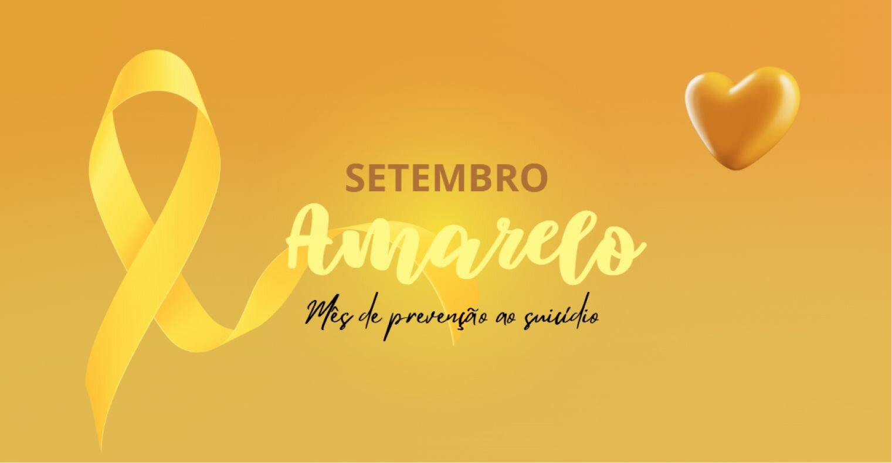
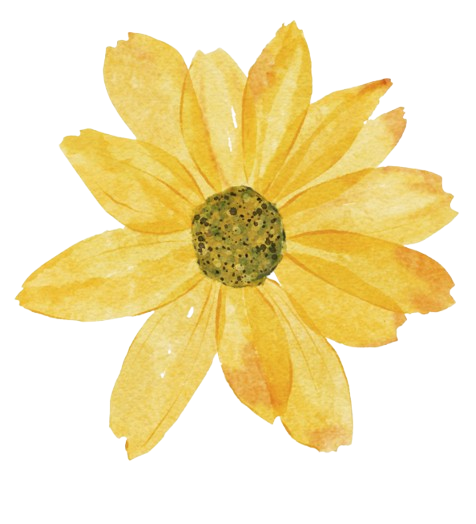

O que e o setembro amarelo❔

Setembro Amarelo é uma campanha nacional de conscientização sobre a prevenção ao suicídio, realizada todos os anos durante o mês de setembro. Criada em 2015 no Brasil, a iniciativa é promovida pela Associação Brasileira de Psiquiatria (ABP) em parceria com o Conselho Federal de Medicina (CFM), e tem como objetivo quebrar tabus, reduzir o estigma e incentivar o diálogo sobre saúde mental.
Por que setembro❔
O dia 10 de setembro é reconhecido mundialmente como o Dia Internacional de Prevenção ao Suicídio. Durante todo o mês, instituições, escolas, empresas e órgãos públicos se mobilizam para sensibilizar a população e oferecer informações e apoio a quem precisa.
A importancia da campanha

problema de saúde pública.

700 mil pessoas morrem por suicídio todos os anos.

1 morte a cada 46 minutos.
A maioria dos casos pode ser evitada com apoio psicológico, acompanhamento médico e uma rede de acolhimento.
Como ajudar❔
Ouça sem julgamentos: muitas vezes, a pessoa só
precisa ser acolhida.
Ofereça apoio e companhia: pequenas atitudes
podem fazer diferença.
Incentive a busca por ajuda profissional:
psicólogos, psiquiatras e grupos de apoio são fundamentais.
Compartilhe informações seguras: evite
conteúdos que romantizem ou incentivem o sofrimento.
Onde buscar ajuda❔
Se você ou alguém que você conhece está passando por um momento difícil, não hesite em pedir ajuda.
Unidades de saúde (SUS): atendimento psicológico e
psiquiátrico gratuito.
CVV - Centro de Valorização da Vida: atendimento gratuito e sigiloso 24 horas por dia pelo telefone 188 ou pelo site cvv.org.br.
UPAs e Hospitais em casos de emergência.
Como participar da campanha❔
- Ilumine prédios e monumentos de amarelo.
- Promova palestras, rodas de conversa e ações educativas.
- Compartilhe conteúdos informativos nas redes sociais.
- Vista-se de amarelo e ajude a espalhar a mensagem de esperança.
Falar sobre saúde mental é um ato de coragem
e amor. O Setembro Amarelo nos lembra que a
vida importa e que ninguém precisa enfrentar
a dor sozinho. A prevenção começa com
informação, empatia e acolhimento.